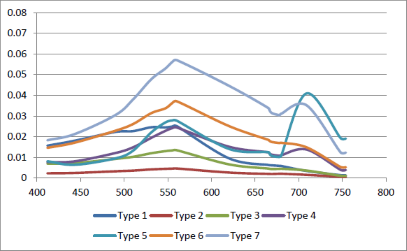
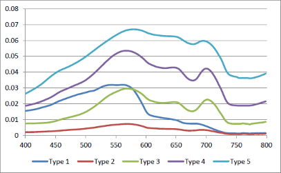
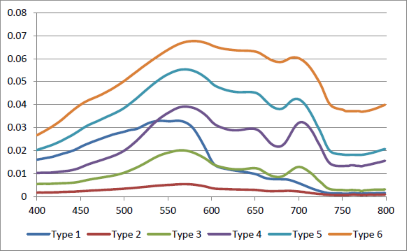

| Algorithm Specification | |
The optical water type classification (OWT) tool is an adaptation of a spectral based optical pre-classification scheme (Moore et al., 2001) that calculates clusters from in-situ spectra. These spectra have been collected by different users from all over the world (University of New Hampshire and NASA’s SeaBass in USA and CEDEX in Spain) and by partners and advisors of the EU- GLaSS and the ESA DUE CoastColour projects. The tool assigns the water type class that corresponds to the best match between the remotely sensed and the in situ spectrum. Moore et al. (2001, 2014) designed a fuzzy logic spectral classification scheme that was adapted for coastal waters and lakes. In situ hyperspectral data were used to characterize optically distinct water classes a priori. The aggregated data come from multiple sources and covers a wide range of concentrations, also for colour dissolved organic matter (CDOM) and suspended sediments (SPM).
In the following table the spectra of the different types are listed. Currently there are 5 methods that lead to 5 different OWT classifications. The spectra represent the reflectance means of the clusters to be used for the classification. As an example the GLASS_6C type is explained here in more detail. The GLASS_6C class 1 is representative of clear water slightly affected by chlorophyll pigments (peak in around band 550 nm). Chlorophyll dominated waters with increase in the pigment concentration are represented by class 1, class 3 and class 4. Classes 5 and 6 transition to bright sediment dominated waters. Class 2 waters are relatively dark in the whole spectrum and occur in peatlands with high humic (CDOM) absorption.
| COASTAL | |
This type should be primarily used, as the name suggests, in coastal areas. It contains a classification with a maximum of 16 classes and represents a wide range of coastal water conditions. These conditions are not unique to any particular region. The clusters are representations of averaged conditions governed by the optical properties of the water column. The last 8 classes are combined into one during the processing, therefore the result has only 9 different classes. |
 |
| INLAND | |
This type is intended for the use with rivers and lakes, but it also contains in situ coastal data as input. The maximum number of clusters is 7. The clusters are not unique to any particular lake, region, or a result of differences between freshwater and marine waters. Marine and freshwater stations can be found in the same clusters. The OWTs show a pattern of increasing absorption in the blue/green for low red/NIR features (classes 1 through 3), followed by increasing peak magnitude at 555 nm (classes 4 through 7). OWTs 1 through 5 show increasing chlorophyll-a concentrations, while OWTs 6 and 7 have lower mean chlorophyll-a values. |
 |
| GLASS_5C | |
This type is intended for the use with lakes and was developed in the frame of the EU-GLaSS project. The in situ reflectance used to train the fuzzy classifier come exclusively from lake waters, which marks the distance with the INLAND option. The water composition of the lakes has a higher mix and includes many CDOM samples from Finnish lakes. Only 5 clusters are considered as the optimal number of classes. The classes are sorted purely on remote sensing reflectance distribution and are representations of optical conditions governed by the total absorption and scattering properties (IOPs). The wavelength dependency gives clues for the interpretation: from chlorophyll_a absorbing dominant waters to higher turbid waters due to the increase in the sediment load. |
 |
| GLASS_6C | |
This type is intended for the use with lakes and was developed in the frame of the EU-GLaSS project. The in situ reflectance used to train the fuzzy classifier come exclusively from lake waters, which marks the distance with the INLAND option. The water composition of the lakes has a higher mix and includes many CDOM samples from Finnish lakes. Here 6 clusters are considered as the optimal number of classes. The classes are sorted purely on remote sensing reflectance distribution and are representations of optical conditions governed by the total absorption and scattering properties (IOPs). The wavelength dependency gives clues for the interpretation: from chlorophyll_a absorbing dominant waters to higher turbid waters due to the increase in the sediment load. |
 |
| GLASS_6C_NORMALISED | |
|
This type is intended for the use with lakes and was developed in the frame of the EU-GLaSS project. The in situ reflectance used to train the fuzzy classifier come exclusively from lake waters, which marks the distance with the INLAND option. The water composition of the lakes has a higher mix and includes many CDOM samples from Finnish lakes. Here 6 clusters are considered as the optimal number of classes. The classes are sorted purely on remote sensing reflectance distribution and are representations of optical conditions governed by the total absorption and scattering properties (IOPs). The wavelength dependency gives clues for the interpretation: from chlorophyll_a absorbing dominant waters to higher turbid waters due to the increase in the sediment load. The normalised classification shows different results than the 6C because the reflectance values were normalised integrating the area under the curve. This removes magnitude effects and focuses more on the spectral shape. |
 |
M. A. Eleveld, A. B. Ruescas , A. Hommersom , S. W. M. Peters and C. Brockmann
An Optical Classification Tool for Global Lake Waters
Available at: http://dx.doi.org/10.3390/rs9050420
Moore, T. S., Campbell J. W., Feng, H. (2001)
A fuzzy logic classification scheme for selecting and blending ocean color algorithms. IEEE Transactions on
Geoscience and Remote Sensing 39(8): 1764-1776
Moore, T. S., Dowell, M. D., Bradt, S., Ruiz Verdu, A. (2014)
An optical water type framework for selecting and blending retrievals from bio-optical algorithms in lakes
and coastal waters. Remote Sensing of Environment 113(11), 2424-2430
GLaSS Deliverable 3.3, 2014.
Optical pre-classification method. VU/VUmc, BC, WI.
Available via: www.glass-project.eu/downloads